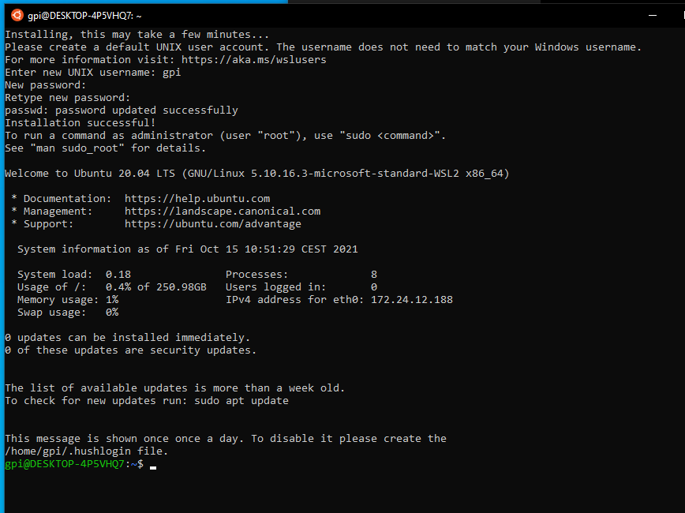

Pre-requirements of windows installations are the same for windows host installation in user mode. But you can avoid numpy and PyQt5 install commands since they will be managed while installing the mia project under ubuntu.
Once pre-requirements are acquired, you will need to install Wsl2 to host a virtual machine of ubuntu to install mia.
1- WSL2 (Windows Subsystem Linux) installation¶
- In an administrator type Windows account:
Windows 10 must be up to date
You need to have enough free space on your system disk : around 20 Gb
Open a PowerShell as administrator (right clic on powershell icon)
enter:
wsl --install -d Ubuntu-20.04

Reboot the computer
Normally a linux ubuntu window is already available, enter it:
enter a user / password who will be administrator of this linux (asked by the system)

Then you can write your first commands to make ubuntu up to date:
sudo apt update
#at this first sudo command, the system may ask you to enter the password you just enter before.
sudo apt upgrade -y
exit
close this window
You can open back Ubuntu to continue the installs.
Open Powershell and type ubuntu to open you vitual ubuntu machine.
Now you have WSL2 and an Ubuntu 20.04 linux.
You can access Windows files via /mnt/c/ in the Ubuntu WSL Windows terminal, we can access
Set your WSL2 as default with wsl --install -d distribution.
2- X server installation in windows with VcXsrv¶
We also need a X windows server to allow linux applications graphic user interface (GUI) works.
- Get VcXsrv.
Execute it,
click ‘next’ then ‘install’ to install it
Looking for XLaunch application icon, launch it.
Configure it like the screenshots below:


Disable ‘Native opengl’ Enable ‘Disable access control’

Do ‘Save Configuration’ in a file that allow you to launch it later (ie on the Desktop)

Allow access asked by Windows firewall.
P.S: You have to make sure VcXsrv is running every time you to run a GUI via your Ubuntu linux distribution.
3 - Dependencies Installation¶
Open an Ubuntu session in Windows by:
click on Ubuntu new icon
or
open a normal Windows PowerShell,enter
ubuntu.20.04.exe
In this Ubuntu window terminal, install the following dependencies:
sudo apt install -y build-essential uuid-dev libgpgme-dev squashfs-tools libseccomp-dev wget pkg-config git git-lfs cryptsetup-bin python3-distutils python3-dev
# Ubuntu 20.04
sudo apt install python-is-python3
4 - BrainVisa Installation¶
To install properly BrainVisa you have to refer to prerequesites guidelines for Singularity on linux.
Prerequisite are the software that need to be installed on your computer in order to be able to install and use BrainVISA. As we use her Ubuntu, we recommand to install Singularity. To do it so follow the steps below.
-Create an installation directory:
mkdir -p $HOME/casa_distro/brainvisa-opensource-master (note that we are using a slightly different directories organization from the user case, because the images here can be reused and shared betwen several development configurations - but this organization is not mandatory, it will just make things simpler for the management tool casa_distro if it is used later)
-Download the “casa-dev” image found here (https://brainvisa.info/download/), preferably into the $HOME/casa_distro directory. Download the lates “casa-dev” image.
It’s a .sif file, for instance casa-dev-5.3-8.sif. Type wget https://brainvisa.info/download/casa-dev-5.3-8.sif
-Execute the container image using Singularity, with an option to tell it to run its setup procedure. The installation directory should be passed, and it will require additional parameters to specify the development environment characteristics. Namely a distro argument will tell which projects set the build will be based on (valid values are opensource, brainvisa, cea etc.), a branch argument will be master, latest_release etc., and other arguments are optional: singularity run -B $HOME/casa_distro/brainvisa-opensource-master:/casa/setup $HOME/casa_distro/casa-dev-5.3-8.sif branch=master distro=opensource.
-Set the bin/ directory of the installation directory in the PATH environment variable of your host system config, typically in $HOME/.bashrc or $HOME/.bash_profile if you are using a Unix Bash shell:
nano ~/.bashrc
export PATH="$HOME/casa_distro/brainvisa-opensource-master/bin:$PATH"
source ~/.bashrc
# we get the ip address to allow X server access and this ip can change when Windows reboot
nano ~/.bashrc
export DISPLAY=$(cat /etc/resolv.conf | grep nameserver | awk '{print $2 ":0.0"}')
source ~/.bashrc
nano casa_distro/brainvisa-opensource-master/conf/bv_maker.cfg
[ build $CASA_BUILD ]
cmake_options += -DPYTHON_EXECUTABLE=/usr/bin/python3
cmake_options += -DDESIRED_QT_VERSION=5
bv_maker
# it takes time to compile
Now you can test if the brainvisa configuration GUI works well via the command: bv.
You have completely installed a virtual Ubuntu which is now able to host mia. You can now follow steps from installation via populse mia installation in user mode.